# Set directory
setwd('/capstone/freshcair/meds-freshcair-capstone')
# Read in field production data
cum_prod <- read_csv('data/processed/asset-year_cumulative_sum_production.csv')
# Read in well exits data
well_exits <- read_csv('data/processed/well_exits.csv')
well_exits_rule <- read_csv('data/processed/well_exits_under_rule.csv')
# Poisson coefficients
poiss_coef <- read.csv('data/intermediate-zenodo/intermediate/extraction-model/exit_regression_coefficients.csv')Predictive Model Development
Overview
The purpose of this script is to compile features from various data sets to build the predictive model of new well entry.
Setup
Exploratory Analayis
Total Production Over Time
# Ensure year column is numeric
cum_prod$year <- as.numeric(cum_prod$year)
# Calculate total production by year
prod_summary <- cum_prod %>%
group_by(year) %>%
dplyr::summarise(total_production = sum(production, na.rm = TRUE))
# Plot total prod over time
ggplot(prod_summary, aes(x = year, y = total_production)) +
geom_line() +
labs(x = "Year", y = "Total Oil Production", title = "Total Oil Production over Time") +
scale_x_continuous(breaks = seq(min(prod_summary$year), max(prod_summary$year), by = 10)) +
theme_minimal() 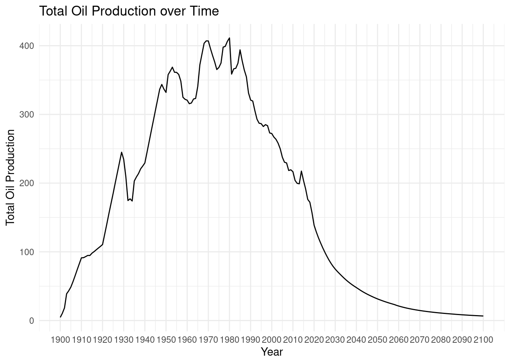
Total Exits by Year
# Well exits plot
yearly_exits <- well_exits %>%
group_by(exit_year) %>%
dplyr::summarise(total_exits = sum(well_exits, na.rm = TRUE))
ggplot(yearly_exits, aes(x = exit_year, y = total_exits)) +
geom_col() +
labs(
title = "Well Exits by Year",
x = "Exit Year",
y = "Total Well Exits"
)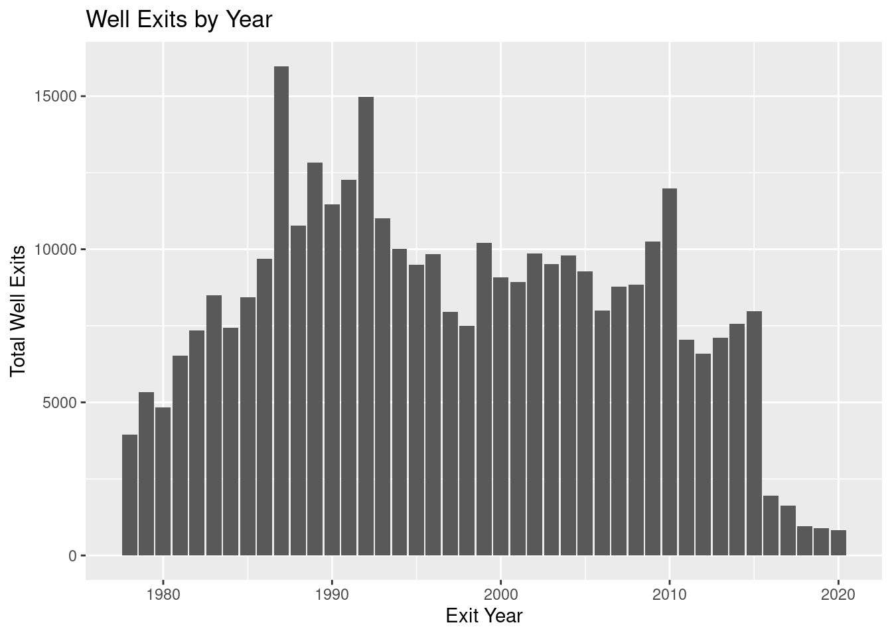
# Well exits over time
yearly_exits_rule <- well_exits_rule %>%
group_by(exit_year) %>%
dplyr::summarise(total_exits = sum(n_exits_field, na.rm=TRUE))
ggplot(yearly_exits_rule, aes(x = exit_year, y = total_exits)) +
geom_col() +
labs(
title = "Total Well Exits Over Time",
x = "Exit Year",
y = "Total Well Exits"
)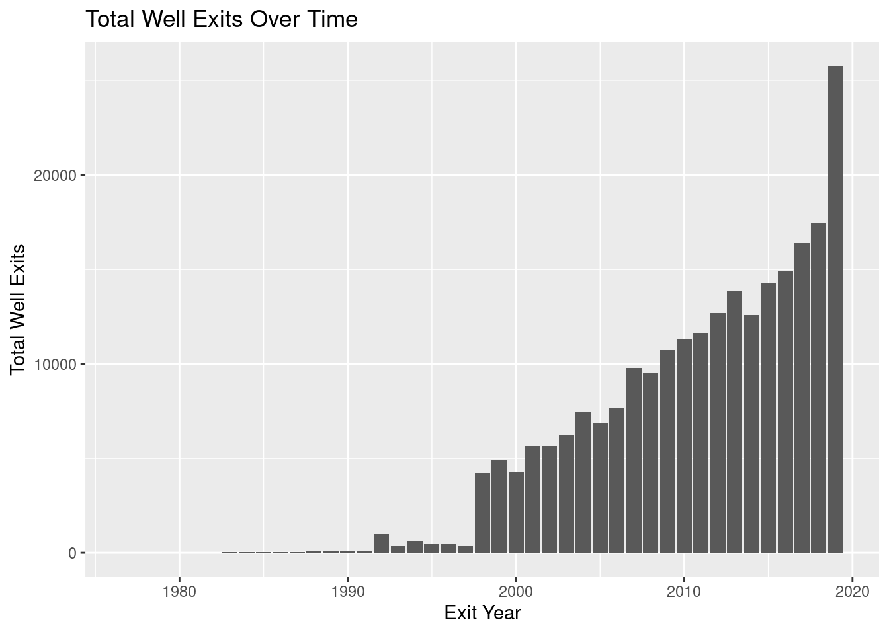
Ranom Forest Implementation
# Read in data
setwd('/capstone/freshcair/meds-freshcair-capstone')
entry_df <- read_csv(file.path("data/processed/entry_df_final_revised.csv"))Wrangling Entry Data
# From entry.R to update the data to have all the features
# Calculating missing columns that are used in analysis ------
# m_cumsum_div_my_prod
entry_df <- entry_df %>%
group_by(doc_field_code) %>%
mutate(m_cumsum_div_my_prod = cumsum(doc_prod) / max(doc_prod)) %>%
ungroup()
# totex_capex
entry_df <- entry_df %>%
mutate(totex_capex = capex_imputed + opex_imputed)
# wm_capex_imputed, wm_opex_imputed, wm_totex
entry_df <- entry_df %>%
group_by(doc_field_code) %>%
mutate(wm_capex_imputed = weighted.mean(capex_imputed, doc_prod, na.rm = TRUE),
wm_opex_imputed = weighted.mean(opex_imputed, doc_prod, na.rm = TRUE),
wm_totex = wm_capex_imputed + wm_opex_imputed) %>%
ungroup()
# Data preparation
entry_df <- entry_df %>%
filter(!grepl("Gas", doc_fieldname) & year != 1977) %>%
rename(depl = m_cumsum_div_my_prod,
topfield = top_field) %>%
mutate(capex_per_bbl_nom = as.numeric(capex_per_bbl_nom),
opex_per_bbl_nom = as.numeric(opex_per_bbl_nom),
capex_imputed = as.numeric(capex_imputed),
opex_imputed = as.numeric(opex_imputed))
# Create field rank and categories
entry_df <- entry_df %>%
group_by(year) %>%
mutate(rank = dense_rank(desc(doc_prod))) %>%
ungroup() %>%
group_by(doc_field_code) %>%
mutate(field_rank = max(rank)) %>%
ungroup() %>%
mutate(nontop_field_categ = ifelse(topfield == 0 & year == 2019, ntile(-field_rank, 10) + 10 + 1, NA)) %>%
group_by(doc_field_code) %>%
mutate(field_categ = max(nontop_field_categ, na.rm = TRUE)) %>%
ungroup() %>%
mutate(field_categ = ifelse(topfield > 0, topfield, field_categ))Build Random Forest
# Create the formula for the random forest model
rf_formula <- as.formula(n_new_wells ~ brent + capex_imputed + opex_imputed + depl)
# Train the random forest model
rf_model <- randomForest(rf_formula, data = entry_df, importance = TRUE, ntree = 500, mtry = 3)
# Make predictions using the trained model
new_wells_pred <- predict(rf_model, newdata = entry_df)
# Add the predicted values to the entry_df data frame
entry_df$new_wells_pred <- new_wells_pred
# Plot the variable importance
varImpPlot(rf_model)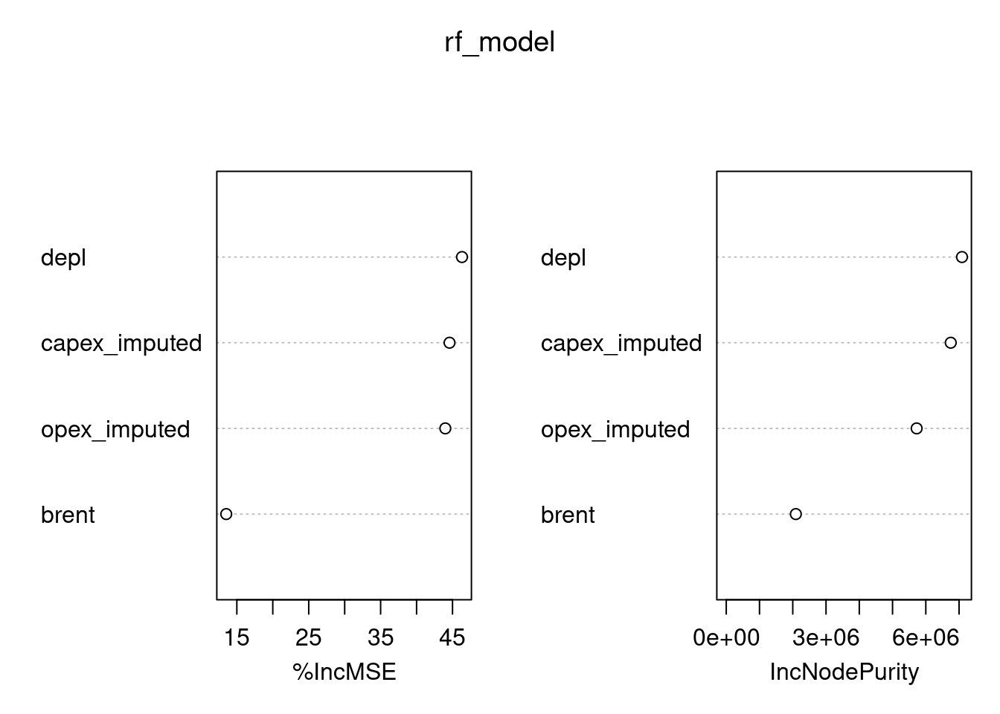
# Create partial dependence plots using the pdp package
pdp_brent <- partial(rf_model, pred.var = "brent", train = entry_df)
pdp_capex <- partial(rf_model, pred.var = "capex_imputed", train = entry_df)
pdp_opex <- partial(rf_model, pred.var = "opex_imputed", train = entry_df)
pdp_depl <- partial(rf_model, pred.var = "depl", train = entry_df)
# Plot the partial dependence plots
autoplot(pdp_brent, main = "Partial Dependence Plot - Brent")
autoplot(pdp_capex, main = "Partial Dependence Plot - Capex")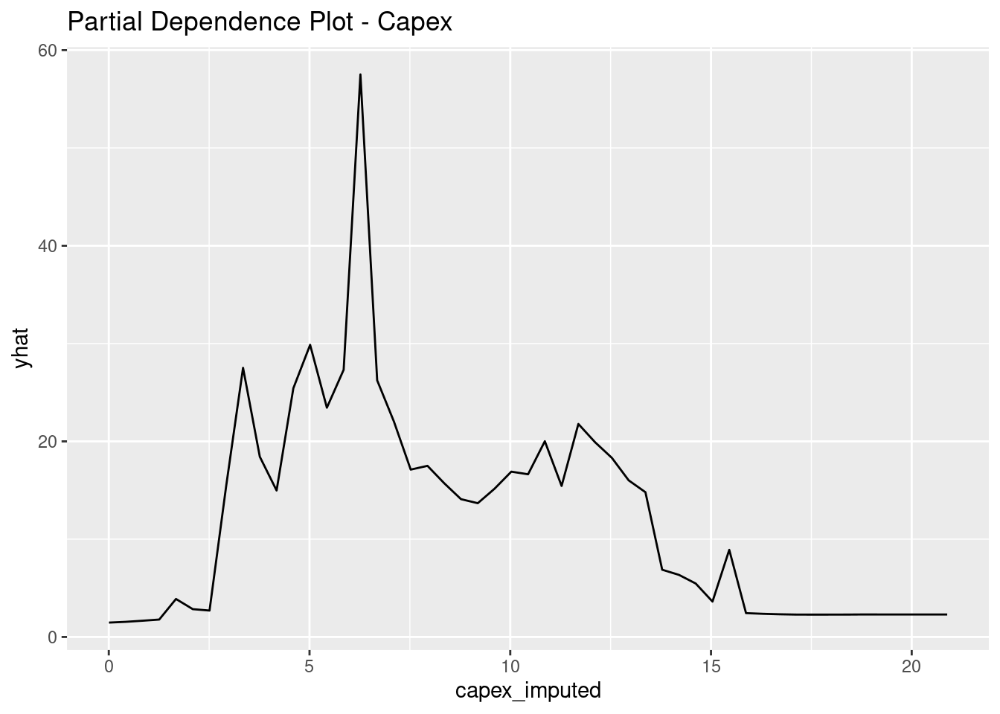
autoplot(pdp_opex, main = "Partial Dependence Plot - Opex")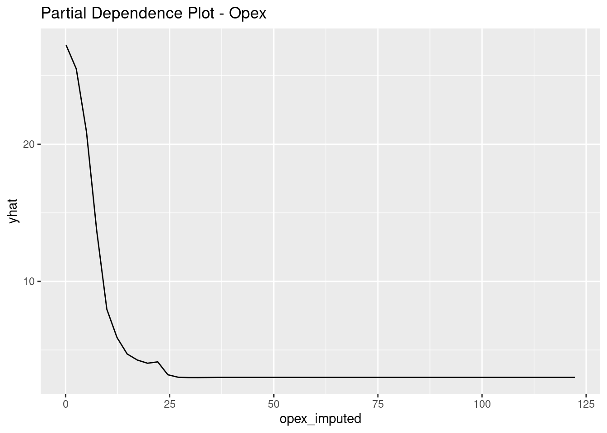
autoplot(pdp_depl, main = "Partial Dependence Plot - Depletion")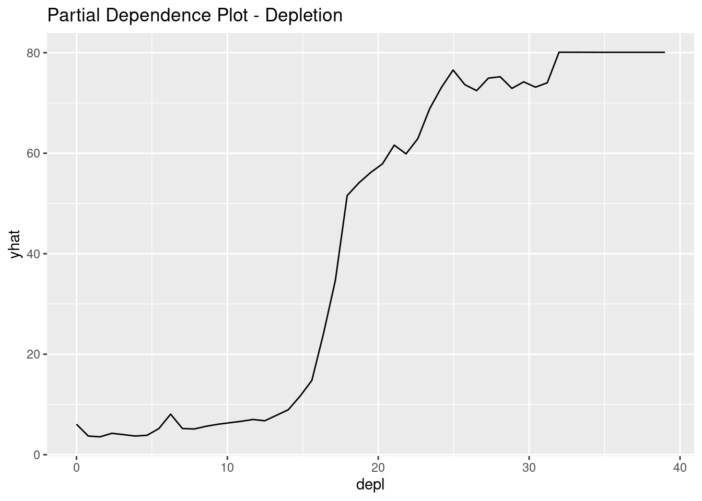
Model Comparison
# Reading in Poisson predictions
setwd('/capstone/freshcair/meds-freshcair-capstone')
new_wells_pred_revised <- read_csv("data/intermediate-zenodo/new_wells_pred_revised.csv") %>%
rename(new_wells_poisson = new_wells_pred)
wells_by_year_revised <- new_wells_pred_revised %>%
group_by(year) %>%
summarise(new_wells_poisson = sum(new_wells_poisson),
new_wells_actual = sum(new_wells))# Create a data frame with the RF predicted and actual new wells by year
wells_by_year <- entry_df %>%
group_by(year) %>%
summarise(new_wells_pred = sum(new_wells_pred),
new_wells_actual = sum(n_new_wells))
# Rename the new_wells_actual column in wells_by_year_revised
wells_by_year_revised <- wells_by_year_revised %>%
rename(original_new_wells_actual = new_wells_actual)
# Join Poisson results data
wells_by_year <- wells_by_year %>%
left_join(wells_by_year_revised, by = "year")
# Remove repeated column
wells_by_year <- wells_by_year %>%
dplyr::select(-original_new_wells_actual)
# Reorder the columns to move new_wells_actual to the second position
wells_by_year <- wells_by_year %>%
dplyr::select(year, new_wells_actual, new_wells_pred, new_wells_poisson, everything())
# Calculate the difference between predicted and actual values
wells_by_year$difference_rf <- wells_by_year$new_wells_pred - wells_by_year$new_wells_actual
# Calculate the difference between predicted and Poisson values
wells_by_year$difference_pois_rf <- wells_by_year$new_wells_pred - wells_by_year$new_wells_poisson
# Calculate summary statistics
compare_new_well_results_summary <- wells_by_year %>%
summarise(
mae = mean(abs(difference_rf)),
mse = mean(difference_rf^2),
rmse = sqrt(mean(difference_rf^2)),
mae_rf_v_poiss = mean(abs(difference_pois_rf)),
mse_rf_v_poiss = mean(difference_pois_rf^2),
rmse_rf_v_poiss = sqrt(mean(difference_pois_rf^2))
)
# # Print the summary statistics
# print(compare_new_well_results_summary)Model Comparison Plot
# Plot the predicted and actual new wells by year
ggplot(wells_by_year, aes(x = year)) +
geom_line(aes(y = new_wells_pred, color = "Random Forest"), size = 0.8, linetype = "solid") +
geom_point(aes(y = new_wells_pred, color = "Random Forest"), size = 2) +
geom_line(aes(y = new_wells_actual, color = "Actual"), size = 0.8, linetype = "dashed") +
geom_point(aes(y = new_wells_actual, color = "Actual"), size = 2) +
geom_line(aes(y = new_wells_poisson, color = "Poisson"), size = 0.8, linetype = "longdash") +
geom_point(aes(y = new_wells_poisson, color = "Poisson"), size = 2) +
labs(
title = "Predicted vs Actual Number of New Wells by Year",
x = "Year",
y = "Number of New Wells",
color = "Legend"
) +
scale_color_manual(
values = c("black", "orange", "blue"),
labels = c("Actual", "Poisson", "Random Forest"),
name = "Legend"
) +
theme(
plot.title = element_text(hjust = 0.5, size = 16),
axis.title = element_text(size = 14),
axis.text = element_text(size = 12),
legend.position = "bottom",
legend.text = element_text(size = 12)
) +
theme_bw()Warning: Using `size` aesthetic for lines was deprecated in ggplot2 3.4.0.
ℹ Please use `linewidth` instead.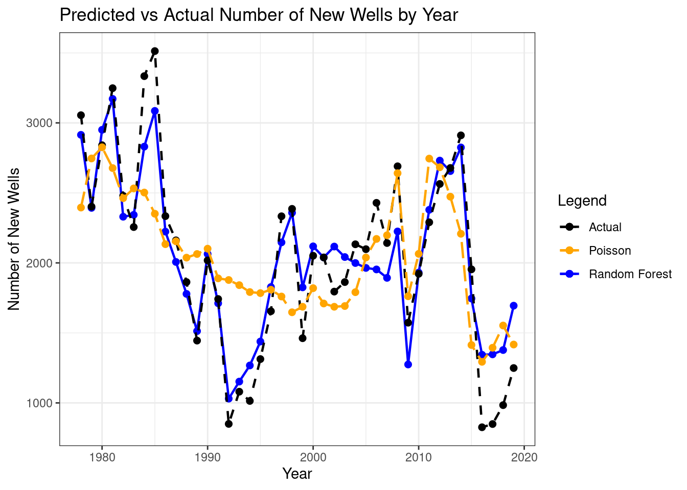
RF Separating Top 10 Fields
# Separate top 10 fields from the rest
top_10_fields <- entry_df %>%
group_by(doc_field_code) %>%
summarise(total_prod = sum(doc_prod)) %>%
arrange(desc(total_prod)) %>%
slice(1:10) %>%
pull(doc_field_code)
top_10_data <- entry_df %>%
filter(doc_field_code %in% top_10_fields)
other_data <- entry_df %>%
filter(!doc_field_code %in% top_10_fields)
# Create separate formulas for top 10 fields and other fields
top_10_formula <- as.formula(n_new_wells ~ brent + capex_imputed + opex_imputed + depl)
other_formula <- as.formula(n_new_wells ~ brent + capex_imputed + opex_imputed + depl)
# Train separate random forest models
top_10_model <- randomForest(top_10_formula, data = top_10_data, importance = TRUE, ntree = 500, mtry = 3)
other_model <- randomForest(other_formula, data = other_data, importance = TRUE, ntree = 500, mtry = 3)
# Make predictions using the trained models
top_10_pred <- predict(top_10_model, newdata = top_10_data)
other_pred <- predict(other_model, newdata = other_data)
# Combine predictions
# Make predictions using the trained models
entry_df <- entry_df %>%
mutate(new_wells_pred_top10 = ifelse(doc_field_code %in% top_10_fields,
predict(top_10_model, newdata = entry_df %>% filter(doc_field_code %in% top_10_fields)),
0))
entry_df <- entry_df %>%
mutate(new_wells_pred_other = ifelse(!doc_field_code %in% top_10_fields,
predict(other_model, newdata = entry_df %>% filter(!doc_field_code %in% top_10_fields)),
0))Graphing Function
# Function to plot wells by field
plot_field_wells <- function(field_data) {
field_name <- unique(field_data$doc_fieldname)
ggplot(field_data, aes(x = year)) +
geom_line(aes(y = new_wells_pred_top10), color = "blue", linetype = "solid") +
geom_point(aes(y = new_wells_pred_top10), color = "blue") +
geom_line(aes(y = n_new_wells), color = "red", linetype = "dashed") +
geom_point(aes(y = n_new_wells), color = "red") +
labs(title = paste("Actual vs Predicted New Wells for", field_name),
x = "Year", y = "Number of New Wells") +
scale_color_manual(values = c("blue", "red"),
labels = c("Predicted", "Actual"),
name = "") +
theme_minimal() +
theme(plot.title = element_text(hjust = 0.5, size = 16),
axis.title = element_text(size = 14),
axis.text = element_text(size = 12),
legend.position = "bottom",
legend.text = element_text(size = 12))
}Graphing Top Fields
# Get the names of the top 10 fields
top_10_fields <- entry_df %>%
group_by(doc_field_code) %>%
summarise(total_prod = sum(doc_prod)) %>%
arrange(desc(total_prod)) %>%
slice(1:10) %>%
pull(doc_field_code)
top_10_field_names <- entry_df %>%
filter(doc_field_code %in% top_10_fields) %>%
select(doc_field_code, doc_fieldname) %>%
distinct() %>%
pull(doc_fieldname)
# Create a list of data frames for each field
field_data_list <- entry_df %>%
group_by(doc_fieldname) %>%
group_split()
# Plot for top 10 fields
for (field_name in top_10_field_names) {
field_data <- entry_df %>%
filter(trimws(doc_fieldname) == field_name)
if (nrow(field_data) > 0) {
print(plot_field_wells(field_data))
} else {
message("No data found for field: ", field_name)
}
}
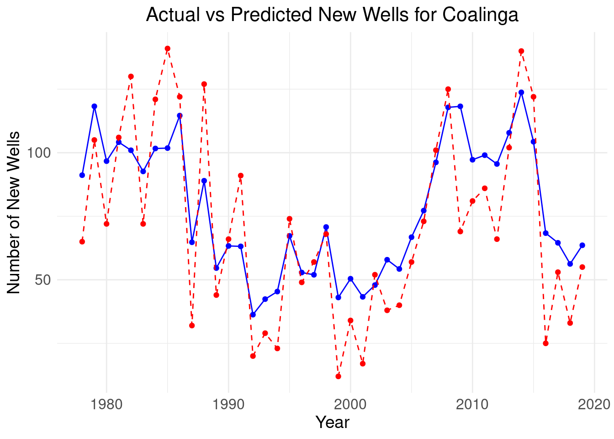
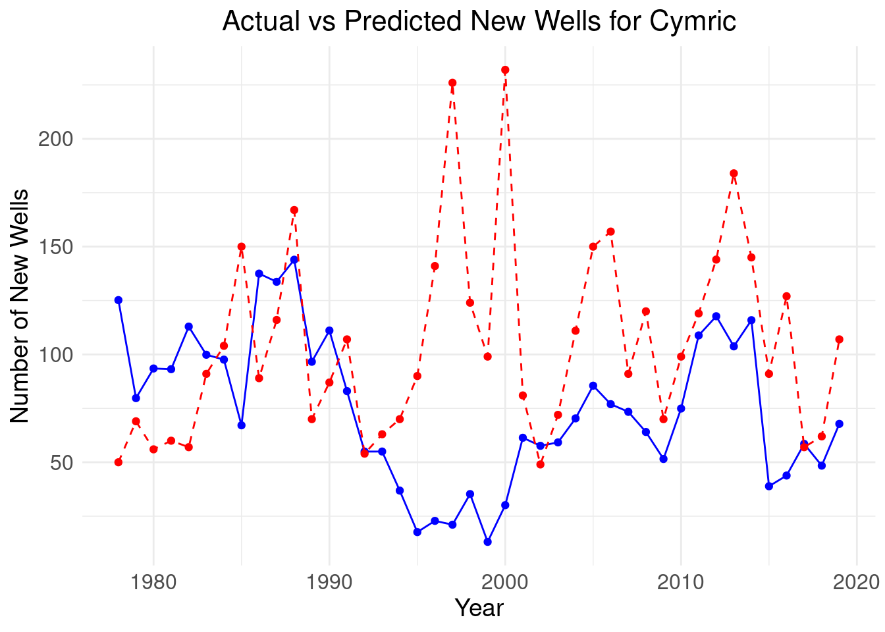
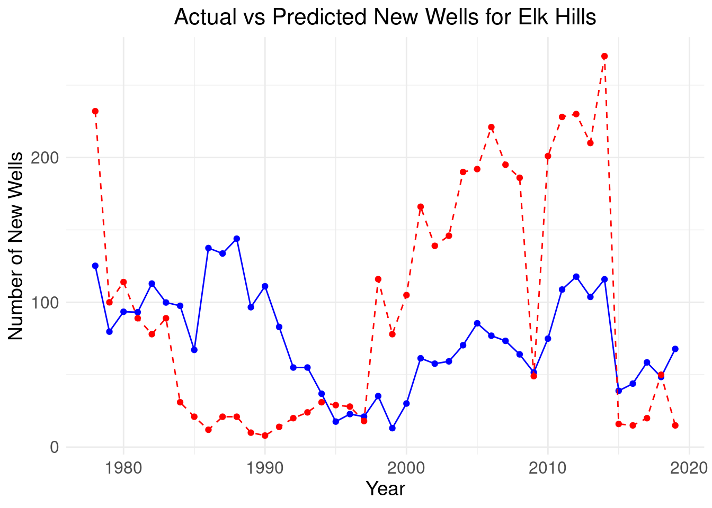
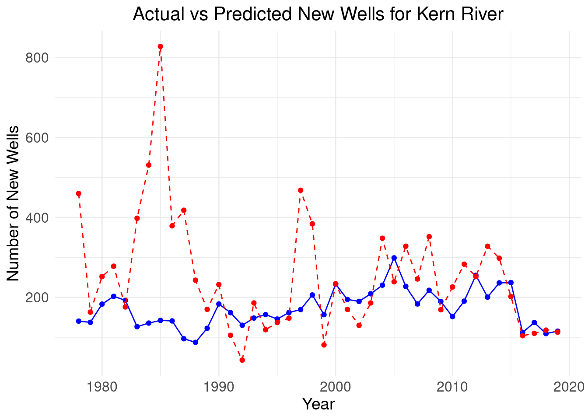
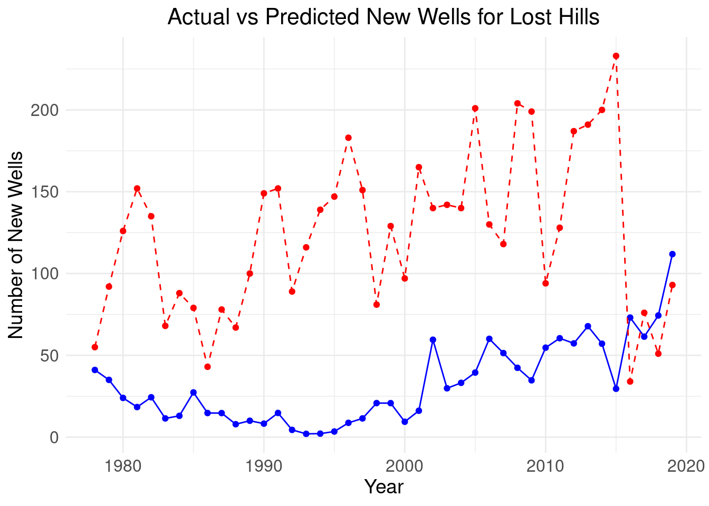

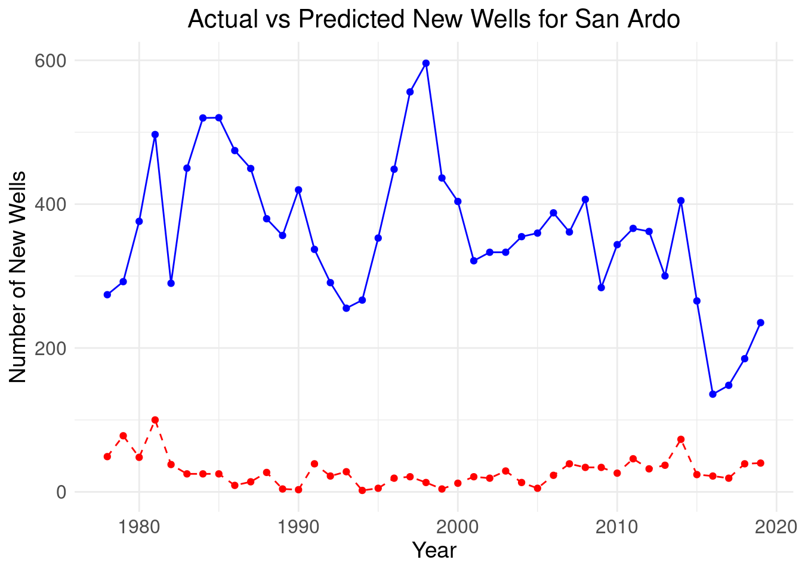
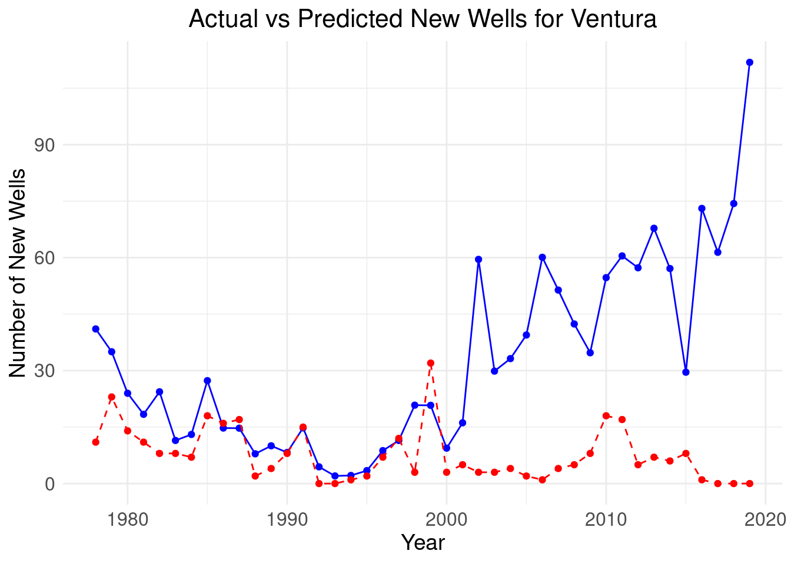
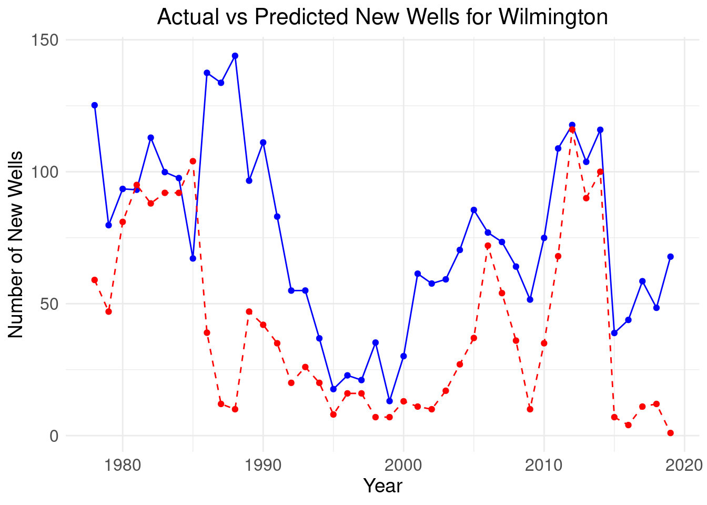
Individual Non-Top 10 Plots
# # Plot for all other fields
# other_fields_data <- entry_df %>%
# filter(!doc_field_code %in% top_10_fields) %>%
# group_by(doc_fieldname) %>%
# group_split()
#
# if (length(other_fields_data) > 0) {
# for (field_data in other_fields_data) {
# if (nrow(field_data) > 0) {
# field_name <- unique(field_data$doc_fieldname)
# print(plot_field_wells(field_data))
# }
# }
# } else {
# message("No data found for other fields")
# }